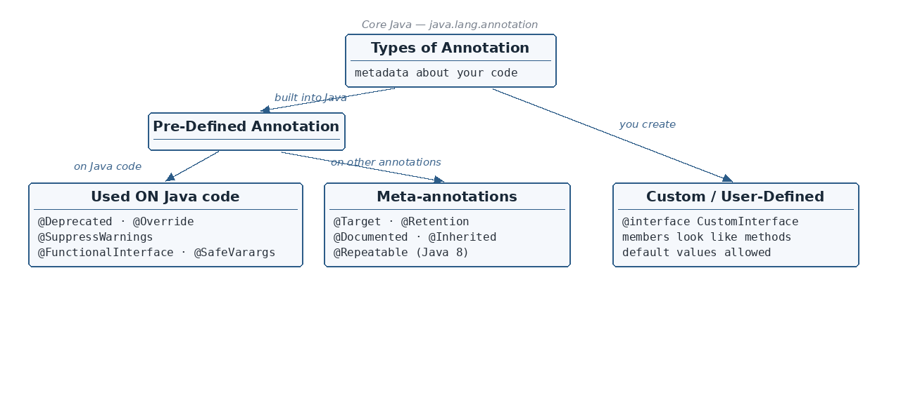

What an annotation is (metadata) and why its usage is optional · The annotation family tree: predefined vs custom…
☕ 9 min read · 🎬 Video walkthrough · 📊 UML diagram · 💻 Runnable code
⚡ In a nutshell — What an annotation is (metadata) and why its usage is optional · The annotation family tree: predefined vs custom annotations · Annotations used on Java code: @Deprecated, @Override, @SuppressWarnings, @FunctionalInterface, @SafeVarargs · What heap pollution means (in simple words)
Everyday analogy: annotations are like sticky notes on a document. The document (your code) is complete without them, but the notes tell readers — human or machine — something extra: "check this page", "old version, don't use", "copy this to the summary". Tools like the compiler, the JVM, and frameworks read these sticky notes and act on them.

You have already seen annotations: @Override, @FunctionalInterface, @Deprecated — they all start with @.
The notes draw this taxonomy as a diagram:
Types of Annotation
/ \
Pre-Defined Annotation Custom / User-Defined
/ \ Annotation
Used ON Java Code Used ON other Annotations
------------------ ("meta-annotations")
@Deprecated @Target
@Override @Retention
@SuppressWarnings @Documented
@FunctionalInterface @Inherited
@SafeVarargs @Repeatable (Java 8)
In plain words:
@Deprecated, @Override, @SuppressWarnings, @FunctionalInterface, @SafeVarargs.@Target, @Retention, @Documented, @Inherited, @Repeatable (Java 8).@interface (Section 8).class PaymentService {
@Deprecated
public void payOld(int amount) { // old way — please stop using me
System.out.println("Old payment: " + amount);
}
public void pay(int amount) { // the new alternative
System.out.println("New secure payment: " + amount);
}
}
public class Main {
public static void main(String[] args) {
PaymentService s = new PaymentService();
s.payOld(100); // compiler shows a WARNING: payOld(int) is deprecated
s.pay(100);
}
}
Output:
Old payment: 100
New secure payment: 100
(plus a compiler warning: "payOld(int) in PaymentService has been deprecated")
void print(T... items).static or final — that is, a method that cannot be overridden. (If a child could override it, the "safety promise" could be broken by the child.)private methods (private methods can't be overridden either).import java.util.List;
public class Main {
@SafeVarargs // "I promise I use these varargs safely — hide the warning"
private static void printAll(List<String>... lists) { // varargs of a generic type
for (List<String> list : lists) {
System.out.println(list);
}
}
public static void main(String[] args) {
printAll(List.of("a", "b"), List.of("c"));
}
}
Output:
[a, b]
[c]
Heap pollution: an object of one type (for example
String) storing the reference of another type of object (for exampleInteger).
In plain words: the heap is where Java keeps objects. "Pollution" happens when a variable that claims to hold one type actually ends up pointing at a different type. The compiler believed your label, but the box contains something else — and at runtime you get a surprise ClassCastException.
import java.util.ArrayList;
import java.util.List;
public class Main {
public static void main(String[] args) {
List<String> strings = new ArrayList<>();
Object anyBox = strings; // allowed: everything is an Object
List<Integer> numbers = (List<Integer>) anyBox; // unchecked warning!
numbers.add(42); // an Integer sneaks into a List<String>
// Heap is now "polluted": strings really contains an Integer.
String s = strings.get(0); // BOOM at runtime
}
}
Output:
Exception in thread "main" java.lang.ClassCastException:
class java.lang.Integer cannot be cast to class java.lang.String
Generic varargs create this risk behind the scenes, so the compiler warns you. @SafeVarargs is your signed statement: "I checked — my method never does this mixing."
Examples from the JDK itself:
@Target(ElementType.METHOD) // @Override may only be placed on methods
public @interface Override {
}
@Target({ElementType.CONSTRUCTOR, ElementType.METHOD}) // two places allowed
public @interface SafeVarargs {
}
(One value = plain @Target(ElementType.METHOD); several values = curly braces {...}.)
TYPE — a class, interface, enum, or annotation typeFIELD — a field (member variable)METHOD — a methodPARAMETER — a method parameterCONSTRUCTOR — a constructorLOCAL_VARIABLE — a local variable inside a methodANNOTATION_TYPE — another annotation (that's what meta-annotations use)PACKAGE — a package declarationTYPE_PARAMETER — a generic type parameter — allows you to apply it on <T>TYPE_USE — any use of a type, e.g. List<@MyAnnotation String>RetentionPolicy.SOURCE — No — No — Discarded by the compiler itself; it is not recorded in the .class file. (e.g. @Override)RetentionPolicy.CLASS — Yes — No — Recorded in the .class file but ignored by the JVM at runtime.RetentionPolicy.RUNTIME — Yes — Yes — Recorded in the .class file and available during runtime — so reflection can read it and act on it.Analogy: SOURCE = a pencil note erased before printing; CLASS = printed in the book but never read aloud; RUNTIME = printed and announced while the program runs.
import java.lang.annotation.Retention;
import java.lang.annotation.RetentionPolicy;
@Retention(RetentionPolicy.RUNTIME) // keep it alive at runtime so reflection sees it
@interface Info {
String author();
}
@Info(author = "Rahul")
class Book {}
public class Main {
public static void main(String[] args) {
Info info = Book.class.getAnnotation(Info.class); // reflection reads it
System.out.println(info.author());
}
}
Output:
Rahul
Remember: if you want to read your annotation with reflection, it MUST be
RetentionPolicy.RUNTIME. With SOURCE or CLASS,getAnnotation(...)returnsnull.
@Documented meta-annotation, the annotation will appear in the generated Java Docs of the classes that use it.import java.lang.annotation.Documented;
@Documented
@interface ApiInfo {
String version();
}
@ApiInfo(version = "2.0")
class PaymentApi {}
// When Javadoc is generated for PaymentApi, "@ApiInfo(version="2.0")" shows up in its docs.
@Inherited meta-annotation to your annotation.import java.lang.annotation.Inherited;
import java.lang.annotation.Retention;
import java.lang.annotation.RetentionPolicy;
@Inherited
@Retention(RetentionPolicy.RUNTIME)
@interface MyCustomAnnotation {}
@MyCustomAnnotation
class ParentClass {}
class ChildClass extends ParentClass {} // no annotation written here...
public class Main {
public static void main(String[] args) {
// ...but thanks to @Inherited, the child "inherits" it:
System.out.println(ChildClass.class.getAnnotation(MyCustomAnnotation.class) != null);
}
}
Output:
true
(Without @Inherited on the annotation, this would print false.)
The problem first — without @Repeatable, this is a compile error:
@Category(name = "Bird") // COMPILE ERROR: duplicate annotation
@Category(name = "LivingThing") // not allowed without the @Repeatable setup
public class Eagle {
public void fly() {}
}
The setup needs TWO annotations — the repeatable one, plus a container annotation that secretly holds the repeats in an array:
import java.lang.annotation.ElementType;
import java.lang.annotation.Repeatable;
import java.lang.annotation.Retention;
import java.lang.annotation.RetentionPolicy;
import java.lang.annotation.Target;
// 1) The annotation we want to repeat:
@Repeatable(Categories.class) // <-- points to its container annotation
@Target(ElementType.TYPE)
@Retention(RetentionPolicy.RUNTIME)
@interface Category {
String name();
}
// 2) The CONTAINER annotation — important for @Repeatable!
@Retention(RetentionPolicy.RUNTIME)
@interface Categories {
Category[] value(); // holds all the repeated @Category annotations
}
Now the repetition is valid:
@Category(name = "Bird")
@Category(name = "LivingThing") // VALID now
public class Eagle {
public void fly() {}
}
class Main {
public static void main(String[] args) {
for (Category c : Eagle.class.getAnnotationsByType(Category.class)) {
System.out.println(c.name());
}
}
}
Output:
Bird
LivingThing
Remember:
@Repeatable(Categories.class)— the value is the container annotation's class. The container must have exactly one member: an array of the repeatable annotation, namedvalue(). Behind the scenes Java wraps your repeated@Categorys into one@Categories.
@interface@interface.public @interface CustomInterface {
String name(); // an annotation "member" (element)
}
Rules for the members inside:
String name();int, boolean, ...), Class, enums, String, another annotation, or an array of these types. (No List, no arbitrary objects!)Using it:
@CustomInterface(name = "testing")
class MyService {}
A member can have a default value with the default keyword. Then the user may skip it:
public @interface CustomInterface {
String name() default "hello";
}
@CustomInterface // OK — name is "hello"
class A {}
@CustomInterface(name = "testing") // OK — name is "testing"
class B {}
import java.lang.annotation.ElementType;
import java.lang.annotation.Retention;
import java.lang.annotation.RetentionPolicy;
import java.lang.annotation.Target;
@Target(ElementType.TYPE) // may be used on classes/interfaces
@Retention(RetentionPolicy.RUNTIME) // keep it, so reflection can read it
@interface CustomInterface {
String name() default "hello";
int version() default 1;
}
@CustomInterface(name = "testing") // version uses its default: 1
class MyService {}
public class Main {
public static void main(String[] args) {
CustomInterface ann = MyService.class.getAnnotation(CustomInterface.class);
System.out.println("name = " + ann.name());
System.out.println("version = " + ann.version());
}
}
Output:
name = testing
version = 1
@Deprecated, @Override, @SuppressWarnings, @FunctionalInterface, @SafeVarargs; used on annotations: @Target, @Retention, @Documented, @Inherited, @Repeatable) vs custom annotations you create.static or final (Java 9: also private).List<String>) → runtime ClassCastException.ElementType (TYPE, FIELD, METHOD, PARAMETER, CONSTRUCTOR, LOCAL_VARIABLE, ANNOTATION_TYPE, PACKAGE, TYPE_PARAMETER, TYPE_USE)..class, ignored by JVM), RUNTIME (in .class + readable by reflection).value() array (the Category/Categories pattern).@interface; members look like methods (no parameters, no body); allowed types: primitives, Class, enums, String, annotations, and arrays of these; use default to give a member a default value.👏 Found this useful? Give it a few claps so more developers discover it, and follow for the whole series — every article ships with a UML diagram, runnable code, a narrated video, and a companion PDF. Happy building! 🚀